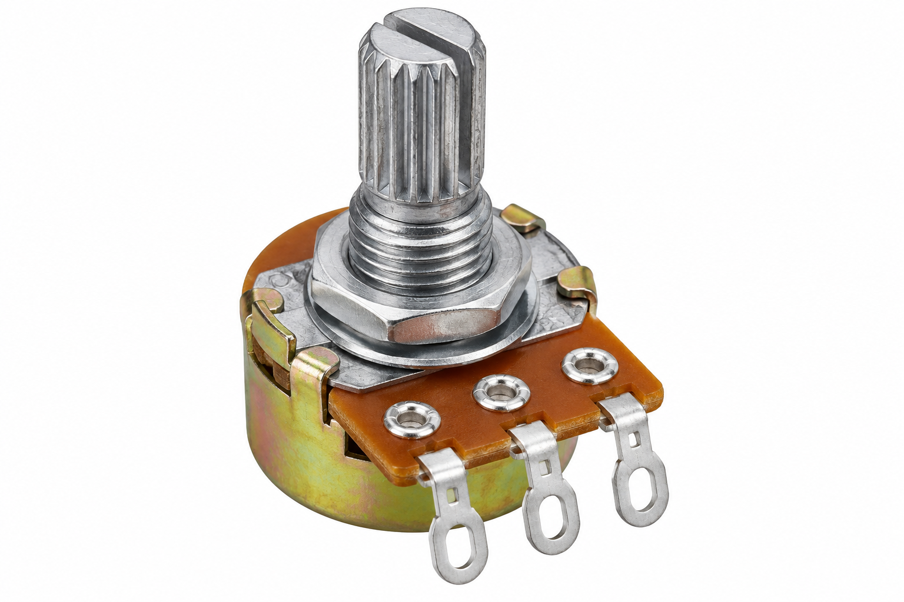

To create an ESP32-based
potentiometer monitoring system
that reads the knob position,
displays the value on an OLED
and sends the live readings
to a Wi-Fi web dashboard.
About the Experiment
In this Experiment,
the ESP32 reads the analog
voltage from a potentiometer.
The raw ESP32 ADC value
ranges from 0 to 4095.
The program converts this
value into a percentage
from 0% to 100%.
The percentage and raw ADC
value are displayed on the
OLED and on a live
Wi-Fi dashboard.
Components Required
ESP32 DevKitC (×1)
Main controller with
built-in Wi-Fi.

Potentiometer (×1)
Provides a variable
analog input to the ESP32.
OLED 128×64 I2C (×1)
Displays the potentiometer
percentage and ADC value.
Breadboard (×1)
Provides a convenient
base for circuit connections.
Connect the potentiometer,
ESP32 and OLED display
as shown in the circuit
diagram from the PDF.
Potentiometer Position
51%
0%
50%
100%
Working Principle
ESP32 Starts
↓
OLED Initializes
↓
ESP32 Connects to Wi-Fi
↓
Potentiometer Signal is Read on GPIO 34
↓
ESP32 Gets ADC Value from 0 to 4095
↓
ADC Value is Converted to 0%–100%
↓
OLED Displays Percentage and ADC Value
↓
Web Dashboard Shows Live Reading
↓
Graph Updates Every 500 ms
Procedure
Place the ESP32 on the breadboard.
Connect potentiometer VCC to ESP32 3.3V.
Connect potentiometer GND to ESP32 GND.
Connect potentiometer SIG to GPIO 34.
Connect OLED VCC to ESP32 3.3V.
Connect OLED GND to ESP32 GND.
Connect OLED SDA to GPIO 21.
Connect OLED SCL to GPIO 22.
Open Arduino IDE.
Install Adafruit GFX library.
Install Adafruit SSD1306 library.
Upload the program to ESP32.
Open Serial Monitor at 115200 baud.
Wait for ESP32 to connect to Wi-Fi.
Note the ESP32 IP address.
Open the IP address in a web browser.
Rotate the potentiometer knob.
Observe the percentage and ADC value
change on the OLED.
Observe the same value changing
on the web dashboard.
Observe the live graph responding
to the potentiometer movement.
ESP32 Experiment · Code Review
Explore the Code
ESP32 Potentiometer Web Monitor ·
Select a step to understand
what each part of the program does.
ESP32_Potentiometer_Web_Monitor.ino
Understand it step by step
Choose a step.
The matching code will
light up on the left.
1. Load libraries
The program loads libraries
for Wi-Fi, web server,
I²C communication and
the SSD1306 OLED display.
Explore more: ADC value
The ESP32 reads the potentiometer
using its 12-bit ADC.
The ADC produces values from:
0
to
4095
The program converts this range
into a percentage from
0% to 100%.
Check your understanding
Which GPIO reads
the potentiometer?
GPIO 34
What is the ESP32 ADC range?
0 to 4095
Which GPIO is OLED SDA?
GPIO 21
Which GPIO is OLED SCL?
GPIO 22
How often does the
web dashboard update?
Every 500 ms
Try it:
Rotate the potentiometer slowly
from minimum to maximum and
watch the percentage, progress bar
and live web graph change.
Expected Output
The OLED displays:
Potentiometer percentage
Raw ADC value
Progress bar
The web dashboard displays
the live potentiometer position,
raw ADC value, Wi-Fi status,
GPIO information and a
real-time graph.
Result
The ESP32 Potentiometer Web Monitor
Experiment successfully reads the
potentiometer through GPIO 34.
The raw analog value is converted
to a percentage and displayed
on both the OLED and
Wi-Fi web dashboard.